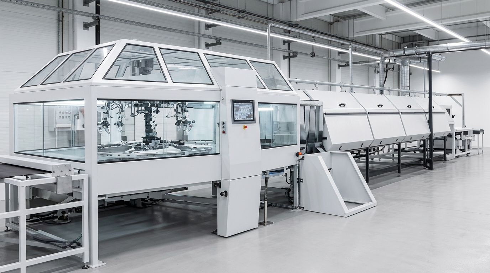

LE-RS3200
Spraying & Drying
Automatic Rotary Spray & Drying Line
Glass-enclosed 8-gun or 12-gun rotary spray booth with PLC hide-sensing economizer, seamlessly coupled to a multi-zone heated drying tunnel.
Working Width
2,800 / 3,200 mm
Conveyor Speed
6 – 22 m/min
Control System
PLC + 10″ HMI